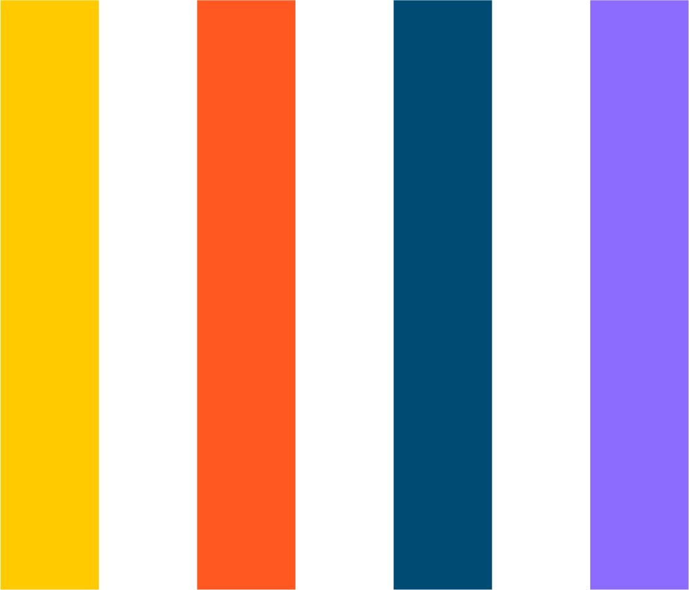

- SOCIEDADE BRASILEIRA DE DERMATOLOGIA. Câncer de pele. SBD, 2021a. Disponível em: https://www.sbd.org.br/dermatologia/pele/doencas-e-problemas/cancer-da-pele/64/. Acesso em: 26 mar. 2021.
- SOCIEDADE BRASILEIRA DE DERMATOLOGIA. Dermatite atópica. SBD, 2021b. Disponível em: https://www.sbd.org.br/dermatologia/pele/doencas-e-problemas/dermatite-atopica/59/. Acesso em: 26 mar. 2021.
- SOCIEDADE BRASILEIRA DE DERMATOLOGIA. Dermatite seborreica. SBD, 2021c. Disponível em: https://www.sbd.org.br/dermatologia/cabelo/doencas-e-problemas/dermatite-seborreica/84/. Acesso em: 26 mar. 2021.
- SOCIEDADE BRASILEIRA DE DERMATOLOGIA. Escabiose (ou sarna). SBD, 2021d. Disponível em: https://www.sbd.org.br/dermatologia/pele/doencas-e-problemas/escabiose-ou-sarna/5/. Acesso em: 26 mar. 2021.